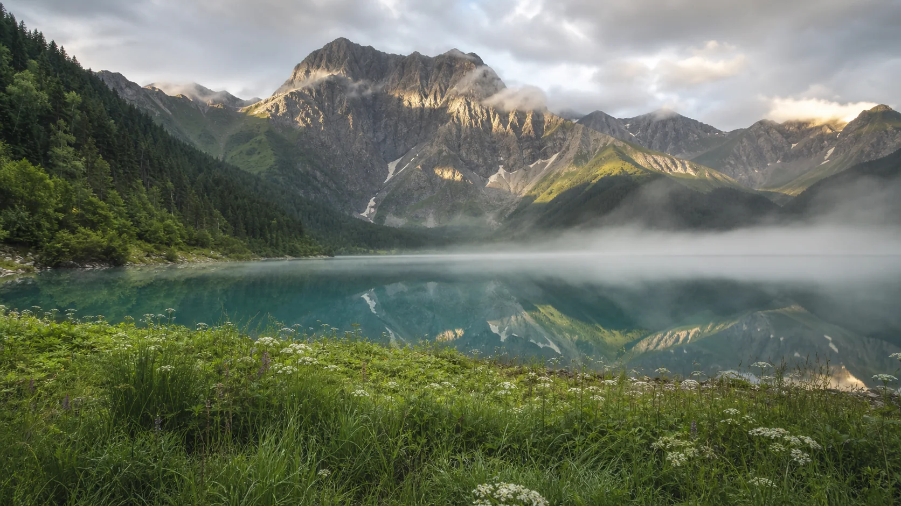

Фотодневник
Мои
кадры
Я сохраняю не только места, но и то, каким был рядом с ними. Горы, обычные утра, близкие люди и версии меня, которые уже стали архивом.



Фотодневник
Я сохраняю не только места, но и то, каким был рядом с ними. Горы, обычные утра, близкие люди и версии меня, которые уже стали архивом.